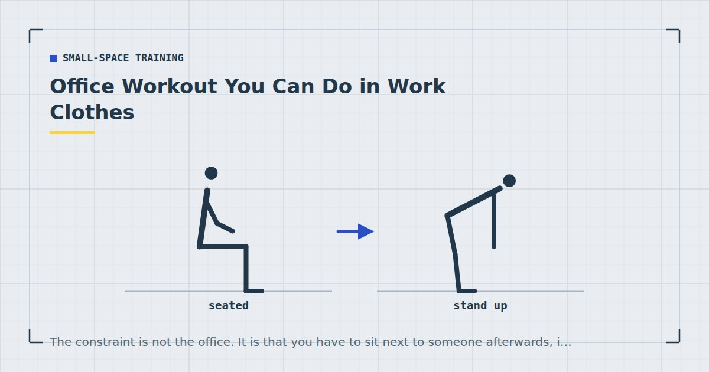

Small-Space Training
Office Workout You Can Do in Work Clothes
The constraint is not the office. It is that you have to sit next to someone afterwards, in the same shirt, without having visibly exercised.

Office workout articles usually assume a private room, a change of clothes and a shower. Most people have none of those, and the session has to survive that.
What follows works in normal clothing, produces very little sweat, and involves nothing that looks especially odd if a colleague walks past.
The three real constraints
Sweat. The binding one. Sweating is driven by sustained elevated heart rate, so anything continuous is out. Strength work with real rest between sets produces a fraction of the heat — the mechanism is explained in the lunch break workout.
Clothing. Shirts, trousers and skirts restrict range of motion, particularly at the hips and shoulders. Deep squats and anything overhead are impractical in most office wear.
Being observed. Whether this matters depends on your workplace, but most people are more comfortable with exercises that read as stretching or normal movement than with burpees in an open-plan office.
Exercises that work in work clothes
Desk push-up
Hands on the desk edge, feet back, body in one line. An incline push-up that requires no floor contact and no unusual clothing demands. Fifteen to twenty-five repetitions depending on the desk height. Form principles are the same as in how to do a perfect push-up.
Chair squat
Stand from your chair without using your hands, sit back down under control, repeat. Shallow enough for office clothing, and effective at higher repetitions. Twelve to twenty.
Split squat holding the desk
One foot forward, one back, lower and press up while holding the desk edge for balance. The support makes it manageable in restrictive clothing. Eight to twelve per leg.
Calf raise
Standing, rise onto the toes and lower slowly. Completely invisible as exercise, works well at high repetitions, and can be done at a standing desk while reading. Twenty to thirty.
Wall sit
Back against a wall, thighs parallel, hold. Silent and static, though it does look like what it is. Thirty to sixty seconds.
Desk row
If your desk is solid and fixed, grip the edge and lean back with straight arms, then pull yourself upright. Test it first — many office desks are not up to it. More options in rows at home.
Standing hip hinge
Feet hip-width, push the hips back keeping the back flat, lower the torso to about forty-five degrees, return. Trains the hinge pattern and looks like a stretch.
Isometric holds
Press your palms together hard for ten seconds, or grip under the desk and pull upward. Genuinely produce some adaptation, entirely invisible, and useful when the office is full.
A 12-minute desk session
Two rounds, resting sixty seconds between exercises. Suitable for a break rather than a lunch hour.
- Desk push-up — 15–20
- Split squat holding the desk — 10 each leg
- Desk row or isometric pull — 12–15
- Standing hip hinge — 15
- Calf raise — 25
Rest properly between sets. It is the single biggest lever on how warm you get, and it also makes each set better.
Micro-sets through the day
Often more practical than a block. One hard set whenever you get up: desk push-ups on the way back from the kettle, a set of calf raises while a document prints, split squats before a meeting.
Three or four of these a day, most days, accumulates a genuine weekly volume, and weekly volume is what drives adaptation rather than how it was packaged into sessions.1 Higher training frequencies perform at least as well as lower ones when weekly volume is equated.2
The catch is that the sets must be genuinely hard. Ten easy desk push-ups is movement, not training.
Not overheating
Four things that keep you presentable:
- Rest sixty seconds between sets. Non-negotiable, and the main lever.
- Nothing continuous. No circuits, no intervals, nothing that keeps the heart rate elevated for minutes at a time.
- Stop five minutes before you need to be back. Body temperature keeps rising briefly after you stop.
- Cool your wrists. Thirty seconds of cold water over the inside of the wrists brings core temperature down faster than expected.
What this does and does not fix
It contributes real training volume, and it breaks up sitting — which addresses a somewhat different health question from training.
What it will not do is replace a proper strength programme. The loads available at a desk are light, the ranges restricted, and the pulling pattern barely covered. Treat this as a supplement to sessions done properly at home — the three-day split is the actual programme.
It also will not fix the postural discomfort of a full day at a desk on its own. Movement helps, but the more targeted work is in the mobility routine for people who sit all day. Adult activity guidance asks for strengthening work covering all major muscle groups on two or more days a week,3 and desk work alone will not cover the whole of that.
If you have a standing desk
A standing desk changes what is available more than most people use it for. Standing already removes the hip-flexed position that makes desk work uncomfortable, and it puts you in a position from which several exercises become trivially easy to slot in.
Calf raises are the obvious one — twenty or thirty while reading something, several times a day, with no interruption to what you were doing. Single-leg balance is another: stand on one foot for thirty seconds a side while on a call. It looks like nothing, and it trains the pelvic stability that sitting all day undertrains.
Standing hip hinges and gentle standing marches also work without a break in concentration. None of these are hard training, and that is the point: they are movement you can accumulate without deciding to exercise, which is a different and complementary thing to the twelve-minute session above.
One caveat worth knowing. A standing desk is not, on its own, exercise, and the evidence for standing desks producing meaningful health outcomes is considerably weaker than their marketing suggests. Standing burns marginally more energy than sitting and changes which tissues are loaded; it does not substitute for the muscle-strengthening activity that adult guidance asks for.3 Use it as a platform for movement rather than as the movement itself.
On doing this in front of colleagues
Worth addressing, because self-consciousness stops this more often than any practical constraint.
Most people notice far less than you expect, and those who do notice mostly do not care. If your workplace makes visible exercise genuinely awkward, the isometric options and the calf raises are invisible, and a stairwell — which most buildings have and almost nobody uses at two in the afternoon — solves the rest. Stairs also happen to be the best conditioning tool in any office building, as covered in stair workouts.
Where to go next
For a longer midday session, see the lunch break workout. For training with no floor work at all, see standing workouts.
Frequently asked questions
What exercises can I do at my desk?
Desk push-ups, chair squats, split squats holding the desk for balance, calf raises, wall sits, standing hip hinges, desk rows if the desk is solid, and isometric holds. All work in normal office clothing.
How can I exercise at work without sweating?
Rest sixty seconds between sets, avoid anything continuous, stop five minutes before you need to be back, and run cold water over the inside of your wrists afterwards. Sweating is driven by sustained elevated heart rate, so strength work with real rest produces a fraction of the heat.
Do micro-workouts through the day actually work?
Yes, provided the sets are genuinely hard. Weekly training volume drives adaptation rather than how it was divided into sessions, and higher frequencies perform at least as well as lower ones when weekly volume is equal.
Can I build muscle with office workouts?
To a limited extent. The available loads are light, ranges are restricted by clothing, and the pulling pattern is barely covered. Treat desk work as a supplement to proper sessions rather than as a replacement.
What office exercises are discreet?
Calf raises, isometric palm presses, isometric pulls under the desk edge and standing hip hinges all read as normal movement or stretching. Wall sits and desk push-ups are effective but visibly exercise.
Sources and further reading
- Schoenfeld BJ, Ogborn D, Krieger JW. “Dose-response relationship between weekly resistance training volume and increases in muscle mass: A systematic review and meta-analysis.” Journal of Sports Sciences, 2017;35(11):1073–1082. PubMed.
- Schoenfeld BJ, Ogborn D, Krieger JW. “Effects of Resistance Training Frequency on Measures of Muscle Hypertrophy: A Systematic Review and Meta-Analysis.” Sports Medicine, 2016;46(11):1689–1697. PubMed.
- World Health Organization. WHO Guidelines on Physical Activity and Sedentary Behaviour. 2020.
- NHS. Physical activity guidelines for adults aged 19 to 64.
Comments
Comments are not enabled yet. Add a hosted comment embed (Disqus, Commento, Giscus) inside this container when you are ready.